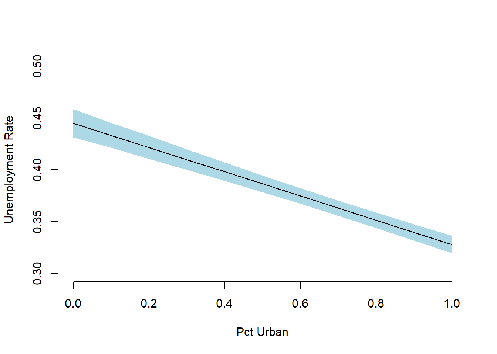

Simulation can be done in a few steps even without the Zelig package. If we make a prediction, we want to be able to quantify our uncertainty of that prediction. This makes it transparent how well we are able to predict.
Simulation is the Swiss army knife of statistics. Quantifying the uncertainty of an outcome can be tough or even impossible algebraically. Even for the linear model we need to consider the standard errors of all coefficients and their covariance. The formulas can be tedious…
For simulation, the process is always the same regardless of the model.
We start by loading data and fitting a linear model on the unemployment rate.
# clear workspace
rm(list=ls())
# load data
df <- read.csv("http://philippbroniecki.github.io/ML2017.io/data/communities.csv")Simulation step 1: Our coefficients each follow a sampling distribution. Jointly, they follow a multivariate distribution which is assumed to be multivariate normal.
To characterize the shape of the distribution we need to know its mean and its variance. The mean is our vector of coefficient point estimates. We extract it using coef(model_name). The variance is the model uncertainty which lives in the variance-covariance matrix. We extract it with vcov(model_name).
As we draw randomly from a distribution we want to set the random number generator with set.seed() to make our results replicable and we pick the number of coefficients to draw form the distribution (the number of simulations).
# run a model
m1 <- lm(PctUnemployed ~ pctUrban + householdsize + racePctWhite, data = df)
# set the random number generator to some value
set.seed(123)
# pick how many coefficients you want to draw from the distribution
n.sim <- 1000
# draw coefficients from the multivariate normal
S <- MASS::mvrnorm(n.sim, coef(m1), vcov(m1))Simulation step 2: Choose a scenario for which you want to make a prediction. That means we have to set our covariates to some value. We will vary the percentage of the urban population and keep all other covariates constant. We also check the range of the variable of interest so that we don’t extrapolate to something that is outside of our data range.
# choose a scenario to predict the outcome for
summary(df$pctUrban)## Min. 1st Qu. Median Mean 3rd Qu. Max.
## 0.0000 0.0000 1.0000 0.6963 1.0000 1.0000# set the covariates (predictions for changes in pctUrban)
X <- cbind( constant = 1,
urban = seq(from = 0, to = 1, by = .1),
householdsize = mean(df$householdsize),
pctwhite = mean(df$racePctWhite))
# check covariates
X ## constant urban householdsize pctwhite
## [1,] 1 0.0 0.4633952 0.7537161
## [2,] 1 0.1 0.4633952 0.7537161
## [3,] 1 0.2 0.4633952 0.7537161
## [4,] 1 0.3 0.4633952 0.7537161
## [5,] 1 0.4 0.4633952 0.7537161
## [6,] 1 0.5 0.4633952 0.7537161
## [7,] 1 0.6 0.4633952 0.7537161
## [8,] 1 0.7 0.4633952 0.7537161
## [9,] 1 0.8 0.4633952 0.7537161
## [10,] 1 0.9 0.4633952 0.7537161
## [11,] 1 1.0 0.4633952 0.7537161Simulation step 3: Predict the outcome. We have set our covariates and we have drawn our coefficients. This is all we need to predict \(y\). Depending on the flavour of generalized linear model, \(y\) may have to be sent through a link function. In logistic regression we would send latent \(y\) trough the logit link function: \(\frac{1}{1 + exp^{-y}}\) to get probabilities that \(y\) is 1. Here, we ran a simple linear model so in linear algebra notation our prediction is simply \(Y=X\beta\).
We estimate y_hat as a matrix where its rows are the number of simulations and its columns are the different covariate scenarios.
# predict outcome, ie betas * X for all scenarios
y_hat <- S %*% t(as.matrix(X))Finally, all that is left is the interpretation of the result. We can simply look at the numerical outcomes similar to using the summary() function on the Zelig simulation object.
# output like the zelig summary (including estimation uncertainty)
apply(y_hat, 2, quantile, probs = c(.025, .5, .975))## [,1] [,2] [,3] [,4] [,5] [,6]
## 2.5% 0.4316010 0.4214979 0.4105675 0.4000181 0.3893180 0.3784349
## 50% 0.4450405 0.4332109 0.4215157 0.4097547 0.3981805 0.3864607
## 97.5% 0.4584981 0.4454806 0.4327917 0.4198413 0.4070521 0.3945582
## [,7] [,8] [,9] [,10] [,11]
## 2.5% 0.3672170 0.3557150 0.3439413 0.3318641 0.3196062
## 50% 0.3747705 0.3630690 0.3512949 0.3396307 0.3279723
## 97.5% 0.3823658 0.3703668 0.3586515 0.3473086 0.3363178We can also draw a plot that shows our mean prediction and the uncertainty around in a few lines.
# plot like zelig's ci plot
par( mfrow = c(1,1))
plot(0, bty = "n", xlab = "Pct Urban", ylab = "Unemployment Rate",
ylim = c(0.3, 0.5), xlim = c(0,1), pch ="")
ci <- apply(y_hat, 2, quantile, probs = c(.025, .975))
polygon(x = c(rev(X[,"urban"]), X[,"urban"]),
y = c(rev(t(ci)[,2]), t(ci)[,1]), border = NA,
col = "lightblue")
lines(x = X[,"urban"], y = apply(y_hat, 2, quantile, probs = .5), lwd = 1)